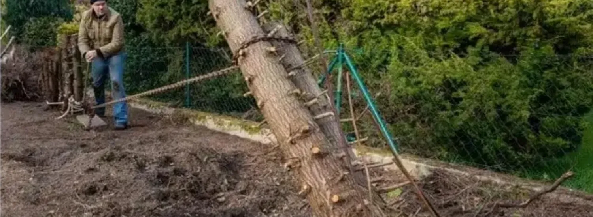

Évacuation des déchets verts
Évacuation des déchets verts à Lambersart
Après un élagage, un abattage ou une grosse taille, il reste des branches, des troncs et des tas de feuilles. Le Ch’ti Élagueur ramasse et évacue vos déchets verts : vous n’avez rien à faire.
Notre savoir-faire
Prévue dans nos chantiers
Sur nos chantiers d’élagage, d’abattage, de taille et de dessouchage, l’évacuation des déchets verts est prévue dès le devis. Le chantier vous est rendu propre.

Aussi pour vos propres déchets
Vous avez taillé vous-même, ou un arbre est tombé chez vous ? Nous pouvons aussi passer uniquement pour enlever vos branches, vos troncs et vos déchets de jardin.
Branches, troncs, haies, feuilles
Nous emportons ce qui vient du jardin : branches et troncs découpés, résidus de taille de haie, souches, feuilles et tontes.

Ni déchetterie, ni remorque
Plus besoin d’allers-retours avec la voiture ni de remorque à louer : nous chargeons et nous emportons.
Votre devis, gratuit
Décrivez-nous les déchets à évacuer par téléphone au 06 04 43 98 99 ou avec le formulaire. Nous venons voir le chantier et nous vous remettons un devis clair, gratuit et sans engagement. Nous intervenons à Lambersart, dans la métropole lilloise et dans tout le Nord et le Pas-de-Calais.
Demander un devis gratuit
Nos autres services